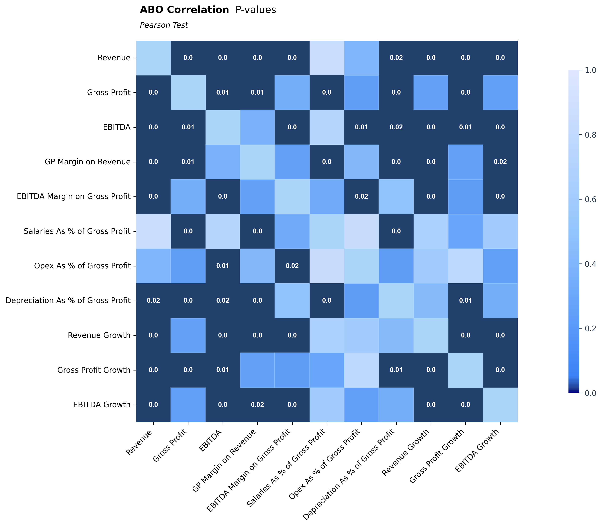
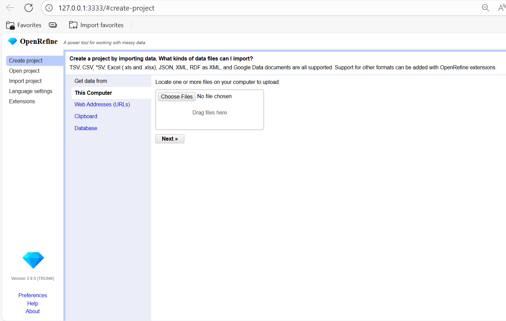
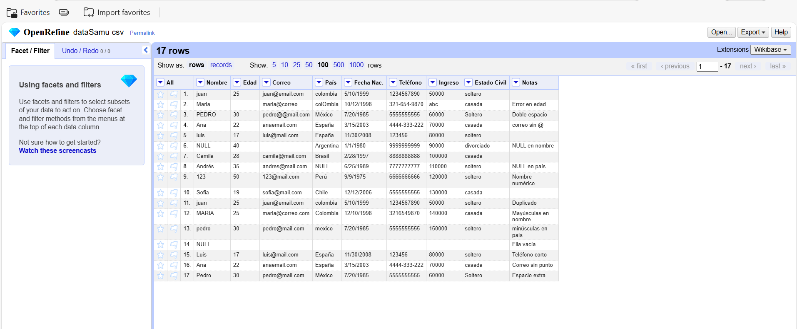
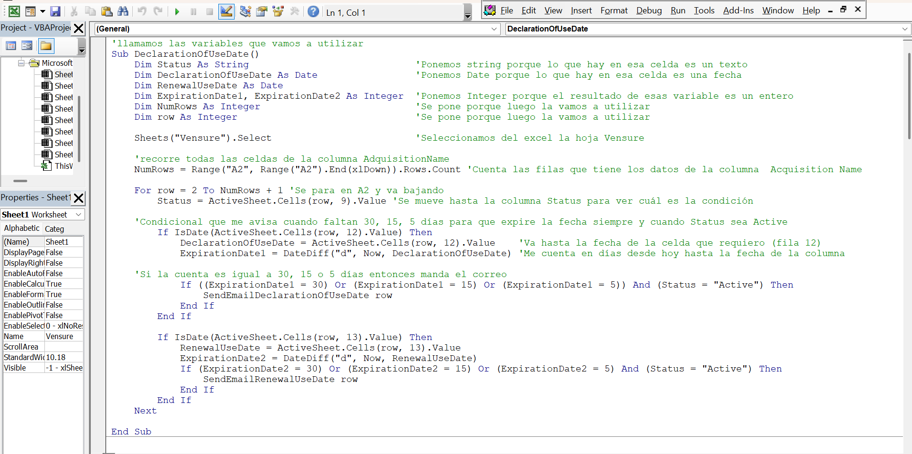
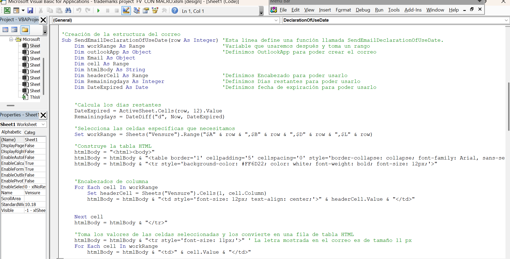
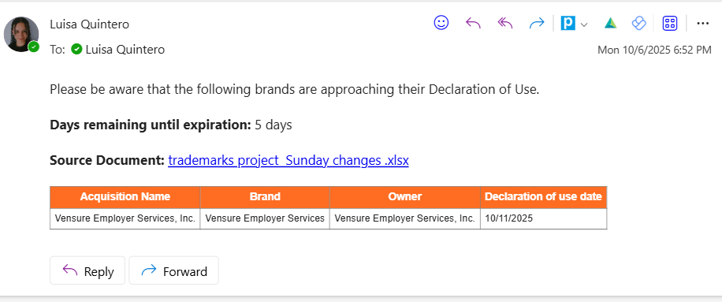

Documentación del Trabajo de Grado
Universidad Nacional de Colombia • Facultad de Ciencias • 2025

Introducción
El objetivo de este documento es plasmar todo lo aprendido a partir de los proyectos realizados. La presentación de los temas se harán en orden cronológico, es decir, desde la primera actividad propuesta tras mi llegada hasta la última correspondiente a la fecha de entrega de este trabajo. Se utilizaron diferentes herramientas y métodologías a lo largo del proceso. Empezamos verificando algunas fórmulas estadísticas ya creadas con el fin de entender su funcionamiento y aplicación y detectar errores en ellas que se pudieran reportar para hacerles su respectiva corrección. En el proceso de verificar estas fórmulas se descubrió que pese a que estaban bien, la base de datos era carente de información, pues contaba con muchas celdas vacías. Allí se introdujo entonces las pruebas paramétricas y no parámetricas en donde comparábamos dos datos diferentes. Una con las celdas vacías llenadas con promedios y otra llenando celdas vacías con la función Beta, que básicamente lo que hacía era darle un valor a esas celdas vacías entre 0 y 1 de tal manera que no se alterara la información que ya se tenía al momento de hacer cálculos y utilizar las fórmulas que ya estaban construidas. Con estas dos datas lo que hicimos fue primero verificar si los datos se comportaban con una distribución normal o no y dependiendo eso decidimos si aplicar una prueba paramétrica o una no paramétrica. Como el resultado nos arrojo que los datos no se comportaban como una distribución normal se decide aplicar la prueba Wilcoxon para mirar si los datos eran estadísticamente significativos (p-value<0.05) o no hay evidencia suficiente para rechazar la hipótesis nula (p-value>0.05). Por otro lado se utilizaron matrices de correlación para mirar la relación que habían entre dos tablas de datos y su correlación entre ellas. También en el proceso de aprender a limpiar data con el fin de tener una base de datos más robusta y completa, aparte de utilizar python con este fin utilizamos OpenRefine, que es una herramienta útil que nos permite limpiar gran cantidades de datos de manera más óptima y sencilla. Por otro lado, para automatizar procesos repetitivos y tediosos utilizamos macros en excel que luego fueron integradas con PowerAutomate para hacer flujos automáticos que nos permitieron ahorrar tiempo y esfuerzo en tareas largas y repetitivas. A continuación daremos un informe detallado de cada una de estas actividades realizadas en esta introducción con el fin de plasmar lo aprendido. Se tratará de mostrar el resultado de cada cosa con el cuidado de no revelar información confidencial de la empresa e incluso alterando los datos en los ejemplos y el código por seguridad y privacidad de la empresa. Se dará una breve explicación de cada uno de los temas tratados para poner el lector en contexto y se mostrará la aplicación que se tuvo en trabajo propuesto, así como los resultados obtenidos. Por último al final tendremos conclusiones y recomendaciones dadas en base a lo aprendido en todo este proceso.
Test de normalidad
Para determinar si nuestros datos siguen una distribución normal, se aplican pruebas de normalidad que comparan la distribución empírica con una distribución normal teórica; gráficamente, la normalidad se refleja en una curva de campana simétrica centrada en la media. Entre las pruebas más utilizadas se encuentran Shapiro-Wilk, Kolmogorov-Smirnov y Anderson-Darling, cada una con sensibilidad distinta según el tamaño de muestra y la forma de los datos. Estas pruebas evalúan si la diferencia entre ambas distribuciones es lo suficientemente pequeña como para aceptar la hipótesis de normalidad, lo cual se interpreta mediante el valor p: si el p-value es menor a 0.05, se rechaza la hipótesis nula y se concluye que los datos son estadísticamente significativos; si es mayor, no hay evidencia suficiente para rechazarla. En nuestros casos de estudio, se aplicaron principalmente las pruebas de Shapiro-Wilk y Wilcoxon, esta última útil para comparar medianas en muestras relacionadas cuando no se cumple la normalidad. La elección entre ambas depende del tipo de variable, el tamaño muestral y la distribución observada, y permite establecer si los datos presentan diferencias significativas o si se mantienen dentro del rango esperado bajo la hipótesis nula.
Pruebas paramétricas y no paramétricas
Las pruebas paramétricas y no paramétricas son pilares fundamentales del análisis estadístico, utilizadas para evaluar hipótesis, comparar grupos, y establecer relaciones entre variables con base en evidencia cuantitativa. La elección entre una u otra no es arbitraria: depende directamente de las propiedades de los datos, como su tipo (cuantitativo, ordinal, categórico), su distribución (normal o no normal), la presencia de valores atípicos, y el tamaño de la muestra.
Pruebas Paramétricas
Las metodologías paramétricas suponen que los datos provienen de una población con distribución normal. Estas pruebas tienen mayor poder estadístico y son ampliamente utilizadas en análisis clásicos, especialmente cuando se trabaja con variables cuantitativas y continuas. Se aplican cuando la población tiene una distribución aproximadamente normal, no se conoce la desviación estándar poblacional y el tamaño muestral es pequeño (generalmente n < 30).
- T de Student: Compara medias entre dos grupos.
- Prueba T: Compara medias entre uno o dos grupos.
- ANOVA: Compara medias entre tres o más grupos.
- Regresión Lineal: Evalúa la relación entre variables.
- Correlación de Pearson: Mide la asociación lineal, por ejemplo, entre horas de estudio y desempeño en un examen.
Pruebas No Paramétricas
La estadística no paramétrica incluye métodos que no requieren que los datos se ajusten a modelos teóricos. Estas pruebas son útiles cuando los datos no siguen una distribución normal, son ordinales o categóricos, presentan valores atípicos o distribuciones sesgadas, o cuando se violan otros supuestos paramétricos. También se aplican en muestras pequeñas donde los métodos paramétricos no son apropiados.
- Wilcoxon: Compara dos grupos relacionados.
- Mann-Whitney U: Compara dos grupos independientes.
- Kruskal-Wallis: Compara más de dos grupos.
- Spearman: Evalúa correlación ordinal o no lineal.
Matrices de correlación
Una matriz de correlación, también conocida como tabla de calor, es una representación gráfica que permite visualizar de forma rápida y clara la relación entre múltiples variables dentro de un conjunto de datos. Cada celda de la matriz muestra el coeficiente de correlación entre dos variables, lo que facilita la identificación de patrones y asociaciones significativas. Esta visualización se apoya en una escala de colores: los tonos más intensos suelen indicar una correlación alta, mientras que los colores más suaves representan correlaciones bajas. En algunos esquemas, el rojo se utiliza para señalar correlaciones débiles o negativas, y el azul para correlaciones fuertes o positivas, lo que mejora la interpretación visual y el entendimiento de los datos. Este enfoque es especialmente útil cuando se trabaja con grandes volúmenes de datos, donde analizar cada relación individualmente sería poco práctico. En nuestro caso particular, utilizamos tablas de calor para representar las correlaciones obtenidas mediante la prueba de Pearson en dos conjuntos de datos distintos. En una de las matrices, se destaca tanto la correlación alta como la baja mediante gradientes de color, mientras que en la otra se prioriza únicamente la visualización de las correlaciones más fuertes, lo que permite enfocar el análisis en las relaciones más relevantes para nuestros objetivos.
Limpieza de datos
Trabajar con miles de datos es parte natural de nuestros procesos, especialmente cuando estos se reportan en formatos como Excel, CSV o JSON. Sin embargo, debido a que los datos provienen de múltiples fuentes, en distintos momentos y son recolectados por personas, es común encontrar errores como valores faltantes, inconsistencias o duplicados. Por eso, la limpieza de datos es una etapa crítica para garantizar la calidad, precisión y confiabilidad de los análisis posteriores. Aunque en Python existen herramientas eficientes para este propósito, también contamos con opciones como OpenRefine, una aplicación poderosa y fácil de usar que permite limpiar y transformar datos de manera intuitiva. OpenRefine funciona como una hoja de cálculo enriquecida, con capacidades avanzadas para detectar y corregir errores comunes, estandarizar formatos, eliminar duplicados y manejar valores nulos. Además, ofrece funciones de agrupación, filtrado y reestructuración que facilitan el acceso y la exploración de la información. Su interfaz amigable permite realizar transformaciones complejas sin necesidad de programación, lo que la convierte en una herramienta versátil y accesible para quienes trabajan con grandes volúmenes de datos y necesitan asegurar su integridad antes de cualquier análisis. Es una herramienta versátil para el análisis de datos.
Macros
Las macros son una herramienta poderosa en Excel que permite automatizar tareas repetitivas y complejas, facilitando el trabajo con grandes volúmenes de datos. A través de la realización de una serie de comandos grabados, las macros pueden ejecutar múltiples acciones con un solo clic, ahorrando tiempo y reduciendo la posibilidad de errores humanos. En nuestro caso, utilizamos macros para optimizar procesos como generación de reportes,recordatorio de fechas importantes etc. Además de grabar macros, también es posible editarlas y personalizarlas mediante el editor de Visual Basic para Aplicaciones (VBA), lo que permite adaptar las automatizaciones a necesidades específicas. Integrar macros con herramientas como Power Automate amplía aún más sus capacidades, permitiendo crear flujos de trabajo automáticos que conectan Excel con otras aplicaciones y servicios.
Resultados obtenidos
test de normalidad
Realizamos pruebas de normalidad (principalmente Shapiro–Wilk) que mostraron p‑values menores a 0,05, lo que indica que las distribuciones de las muestras se apartan de la normalidad. En consecuencia utilizamos pruebas no paramétricas; para la comparación entre las dos versiones de los datos (celdas faltantes imputadas por la media vs. imputadas mediante una función Beta) aplicamos la prueba de Wilcoxon. La prueba de Wilcoxon arrojó un p‑value < 0,05, evidenciando diferencias estadísticamente significativas entre ambas imputaciones. Con base en estos resultados se optó por la imputación mediante la función Beta, por mostrar un comportamiento más robusto y preservar mejor las características originales de la base de datos. A continuación se presenta el código empleado y un gráfico que ilustran los resultados obtenidos.
.png)

En esta gráfica se observa la comparación entre las dos versiones de los datos: una con celdas faltantes imputadas por la media (en azul) y otra con celdas faltantes imputadas mediante una función Beta (en naranja). Ambas distribuciones muestran diferencias notables en su forma y dispersión, lo que se refleja en el resultado de la prueba de Wilcoxon, que indicó un p‑value < 0,05, confirmando que las diferencias entre ambas imputaciones son estadísticamente significativas. Esto respalda la elección de la imputación mediante la función Beta como la opción más adecuada para preservar las características originales de la base de datos y mejorar la calidad del análisis posterior. En esta otra imagen se muestran las dos gráficas superpuestas para comparar visualmente las diferencias entre ambas imputaciones. Esto nos da una visión clara de cómo cada método afecta la distribución de los datos y nos permite identificar patrones o anomalías que podrían no ser evidentes al observar las gráficas por separado y a escoger la mejor distribución para el análisis posterior.
Matrices de correlación
Se generaron matrices de correlación utilizando la prueba de Pearson para dos conjuntos de datos diferentes con el fin de evaluar las relaciones entre múltiples variables. En la primera matriz, se empleó un esquema de colores que resaltan tanto las correlaciones altas como las bajas mediante gradiantes de color, facilitando la identificación visual de patrones y asociasiones significativas entre las variables. En la segunda matriz, se priorizo la visualización de las correlaciones más fuertes, lo que permitió enfocar el análisis en las relaciones más relevantes para nuestros objetivos. A continuación se presentan las dos matrices generadas, acompañadas del código utilizado para su creación y una breve explicación de los resultados obtenidos.
.png)

limpieza de datos
Se aplicaron diversas técnicas de limpieza de datos para mejorar la calidad de los mismos antes de realizar el análisis. Esto incluyó la eliminación de duplicados, el tratamiento de valores atípicos y la normalización de las variables. A continuación se presentan los resultados obtenidos tras aplicar estas técnicas, así como una breve descripción de cada uno de ellos.
En esta imagen vemos la vista general de la página, aquí simplemente subimos el documento tipo xlsx, csv o json.
En esta imagen se puede ver el proceso de limpieza de datos, donde se pueden aplicar diversas transformaciones y filtros para mejorar la calidad de los datos. En las flechas vemos diferentes opciones que se ajustan a lo que necesito hacer con los datos, ya sea eliminar duplicados, filtrar por valores específicos, transformar datos, entre otros. Simplemente tenemos que oprimir la flecha y buscar la opción deseada. También hay opciones más complejas en la cual se agrega un código y se pueden realizar transformaciones más avanzadas, como por ejemplo, si agregamos el código value.replace(/[^0-9]/, "") en la opción transform podemos eliminar de los datos carácteres inoportunos que ensucian la data.

Macros en excel
Creamos una macro con la intención de que funcionara como un recordatorio automatico para fechas de un excel que estuvieran a 5, 15 y 30 días de vencerse. La macro lo que hacía era revisar la columna de fechas y dependiendo de la fecha actual del sistema, si alguna fecha estaba a 5, 15 o 30 días de vencerse, automáticamente se enviaba un correo electrónico a la persona encargada de esa tarea para recordarle que esa fecha estaba próxima a vencerse. El correo debía contener un mensaje recordatorio, los días que faltaban para que la fecha expirara y un link que direccionara al archivo de excel, con el fin de tener el material a la mano para hacerle las debidas manipulaciones. Esta, con ayuda de un organizador de tareas nos permitió tener un flujo de trabajo más organizado y eficiente. Esto nos ayudó a automatizar un proceso que antes se hacía manualmente y que consumía mucho tiempo y esfuerzo. A continuación se muestra el código utilizado para crear esta macro en VBA (Visual Basic for Applications). A continuación se mostrara la estructura general que contenía el código de la macro.


En estas imagenes se observan como está estructurado el código de la macro, en la primera parte se definen las variables que se van a utilizar, como la hoja de excel, la columna de fechas, el rango de celdas a revisar, entre otras, y se realiza de manera lógica el código de tal manera que recorra las columnas necesarias para obtenga las fechas, verifique los días que faltan para que estas fechas expiren y verifique que los datos de la columna Status se encuentren activos. En la segunda parte de la macro se envían los correos electrónicos correspondientes. Hace la conexión con outlook y envía los correos electrónicos con el mensaje recordatorio y el link al archivo de excel con una tablita que muestra la información necesaria, de tal manera que la persona que recibe el correo sepa que hacer y lo resuelva de forma rápida y sencilla. A continuación se muestra la estructura del correo recibido
Otros conocimientos obtenidos
En el transcurso de esta práctica, he adquirido competencias en diversas herramientas y metodologías que han enriquecido mi formación profesional. En primer lugar, he desarrollado experiencia en Draw.io, una herramienta fundamental para la visualización de información que me ha permitido crear diagramas, fichas técnicas y mapas conceptuales que facilitan la comprensión y comunicación de conceptos complejos. De manera paralela, he profundizado en el manejo avanzado de Microsoft Excel, dominando funciones especializadas tales como BUSCARV, BUSCARH, tablas dinámicas y formatos condicionales, capacidades esenciales para el análisis y gestión de datos empresariales. Una responsabilidad adicional que me fue asignada fue el acompañamiento y mentoría de otro practicante en el uso de OpenRefine y técnicas de limpieza y depuración de datos. Esta experiencia no solo fortaleció mis habilidades instructivas, sino que también consolidó significativamente mis conocimientos en este campo crítico. En los últimos meses, he realizado un aprendizaje profundo en Programación Orientada a Objetos (POO) con Python, aplicando estos principios en un proyecto colaborativo del departamento de Data Analytics. El proyecto contempla la gestión de datos de empleados y registros de ventas, con el objetivo de desarrollar un sistema robusto que automatice la validación y corrección de inconsistencias en la información, eliminando la necesidad de revisión manual exhaustiva y mejorando la eficiencia operativa. Asimismo, he incorporado buenas prácticas de desarrollo en Python, adhiriéndome a estándares internacionales como PEP 8 y Python Style Guides. Esto incluye la implementación de código legible, bien estructurado, eficientemente comentado y mantenible, principios fundamentales en la ingeniería de software profesional. Como entregable final de este proyecto, he preparado dos presentaciones técnicas dirigidas a los equipos de trabajo, en las cuales demuestro el funcionamiento integral del sistema, así como los aprendizajes y metodologías aplicadas, generando un impacto práctico y educativo en la organización.
Conclusiones
Ha sido una experiencia totalmente nueva para mí que me ha permitido aprender y crecer tanto como persona como profesional. Cada día ha sido un reto para mí y pese a que al principio me costó adaptarme, con el tiempo me he dado cuenta y he aprendido que no tengo todas las respuestas, pero estoy dispuesta a seguir mejorando y aprendiendo. También que está bien pedir ayuda en vez de quedarme días estancada intentando entender algo por mi propia cuenta, trabajar en equipo es algo fundamental para el crecimiento personal. También, es importante resaltar la importancia de la comunicación efectiva en el trabajo colaborativo, muchas veces pasa que creemos entender una tarea pero en realidad lo que se pedía era diferente. De esta experiencia también me llevo mucho aprendizaje en programación, lógica pero sobre todo en estadística, saber interpretar bien los datos con ayuda de funciones o gráficos ha sido clave fundamental en mi aprendizaje, pues gracias a ello he logrado descifrar el comportamiento de los dataset con el objetivo de sacar información útil. Resalto además, la importancia que tienen las matemáticas en la vida cotidiana, muchas veces con lo que vemos en la universidad caemos en el error de pensar que a menos que se escoja el camino de la docencia, es muy poco lo que se puede aplicar en la vida diaria los conocimientos adquiridos durante más de cinco años, sin embargo, aunque no apliquemos 100% todo lo que vemos en la carrera, todo eso que vimos es para crear una madurez matemática a lo largo del tiempo con el fin de entender el mundo desde la lógica, la codificación de problemas cotidianos y la resolución de problemas complejos con resultados vistos en algunas materias ya vistas en la carrera para así nosotros mismos crear y analizar fórmulas que nos facilite el entendimiento de los datos d una forma más fácil y efectiva. Por último me gustaría incluir que esta experiencia me ha ayudado a descrubrir que no debo tener miedo a equivocarme, pues con la practica y la experiencia de los años los errores serán cada vez menos frecuentes. Lidiar con la frustración de no entender o cometer errores será con algo que tendré que batallar de ahora en adelante, pero esto no significa que no soy o seré buena profesional, significa que estoy en un proceso constante de aprendizaje que me llevará a mejorar cada vez más.
Agradecimientos
Quiero agradecer en esta sección a mi compañero Santiago que estuvo dispuesto a explicarme y a resolver todas las dudas que tenía con paciencia y desinteresadamente, me aconsejaba sobre mejores maneras de realizar u optimizar códigos para el entendimiento del lector o sugerirme librerías que me facilitaran el desarrollo de las actividades. Además, me siento muy afortunada de haber contado con unos excelentes compañeros de trabajo que hicieron amena mi estadía en este lugar viendo en ellos una mano amiga que estaban dispuestos a guiarme con respeto y asertividad. br>